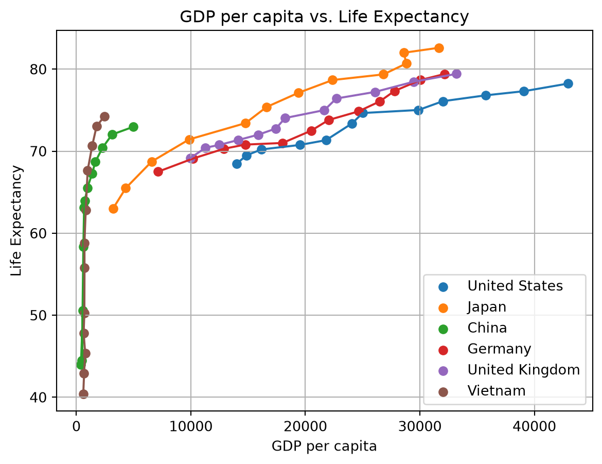

Data: Gapminder GDP and Life Expectancy, compiled from the World Bank, Maddison Project Database, IHME, and UN Population Division. Creative Commons Attribution 4.0 International license (CC-BY 4.0)
I’ll be examining a selection of countries within the Gapminder dataset to investigate the relationship between GDP and life expectancy over time. To begin, I’ll import the necessary libraries and relevant data for these nations: the United States of America, Japan, China, Germany, the United Kingdom, and Vietnam.
import numpy as npimport plotly.express as pximport matplotlib.pyplot as pltdf = px.data.gapminder()america_data=df[df["iso_alpha"] =="USA"]japan_data=df[df["iso_alpha"] =="JPN"]china_data=df[df["iso_alpha"] =="CHN"]germany_data=df[df["iso_alpha"] =="DEU"]uk_data=df[df["iso_alpha"] =="GBR"]vietnam_data=df[df["iso_alpha"] =="VNM"]print(vietnam_data)
country continent year lifeExp pop gdpPercap iso_alpha \
1644 Vietnam Asia 1952 40.412 26246839 605.066492 VNM
1645 Vietnam Asia 1957 42.887 28998543 676.285448 VNM
1646 Vietnam Asia 1962 45.363 33796140 772.049160 VNM
1647 Vietnam Asia 1967 47.838 39463910 637.123289 VNM
1648 Vietnam Asia 1972 50.254 44655014 699.501644 VNM
1649 Vietnam Asia 1977 55.764 50533506 713.537120 VNM
1650 Vietnam Asia 1982 58.816 56142181 707.235786 VNM
1651 Vietnam Asia 1987 62.820 62826491 820.799445 VNM
1652 Vietnam Asia 1992 67.662 69940728 989.023149 VNM
1653 Vietnam Asia 1997 70.672 76048996 1385.896769 VNM
1654 Vietnam Asia 2002 73.017 80908147 1764.456677 VNM
1655 Vietnam Asia 2007 74.249 85262356 2441.576404 VNM
iso_num
1644 704
1645 704
1646 704
1647 704
1648 704
1649 704
1650 704
1651 704
1652 704
1653 704
1654 704
1655 704
From this example we can see the all the lines of Vietnam’s data. Each nation’s data will follow this format, so we can put the sets into a list and iterate over it for future manipulations.
Utilizing Matplotlib and some for-loops, we can visualize the effect that GDP has had on life expectancy for each nation.
data_set=[america_data, japan_data, china_data, germany_data, uk_data, vietnam_data]for i in data_set:if i.empty:continue country = i['country'].iloc[0] plt.scatter(i['gdpPercap'], i['lifeExp'], label=country) plt.plot(i['gdpPercap'], i['lifeExp'])plt.xlabel('GDP per capita')plt.ylabel('Life Expectancy')plt.legend()plt.title("GDP per capita vs. Life Expectancy")plt.grid()plt.show()

National gross domestic product per capita vs. Life Expectancy.
By plotting each on the same chart, we can see the relationship between rising GDP per capita and a rising life expectancy. We can also note instances of the unequal relatioship between the two - nations like Vietnam and China experienced an enormous rise in life expectancy despite the GDP per capita only rising minorly, whereas the other nations saw more dramatic increases of GDP with smaller gains in life-expectancy.
We can also use our sample to calculate the averages of each statistic for this subset of nations.
for i in data_set:if i.empty:continue country = i['country'].iloc[0] avg_life_exp = i['lifeExp'].mean() avg_gdppc = i['gdpPercap'].mean()print(f"{country.title()} has an average mean GDP per capita of {avg_gdppc:.2f} and a mean life expectancy of {avg_life_exp:.2f} years.")
United States has an average mean GDP per capita of 26261.15 and a mean life expectancy of 73.48 years.
Japan has an average mean GDP per capita of 17750.87 and a mean life expectancy of 74.83 years.
China has an average mean GDP per capita of 1488.31 and a mean life expectancy of 61.79 years.
Germany has an average mean GDP per capita of 20556.68 and a mean life expectancy of 73.44 years.
United Kingdom has an average mean GDP per capita of 19380.47 and a mean life expectancy of 73.92 years.
Vietnam has an average mean GDP per capita of 1017.71 and a mean life expectancy of 57.48 years.
We can see here the averages of each statistic for each nation across the subset. We find that the means for the life expectancy and GDP for China and Vietnam are significantly lower than the other nations in the subset. However, from the graph we can also see that ‘success’ within the dataset is more biased towards some nations - for example, there is no historical data for the period of time when, say, Germany would have had a significantly lower life expectancy. It cuts off at a point that places its worst value near China’s best, whereas a more complete historical set would likely have all the nations on the top-right’s mean values for GPD per cap. and life expectancy closer to those on the far left.